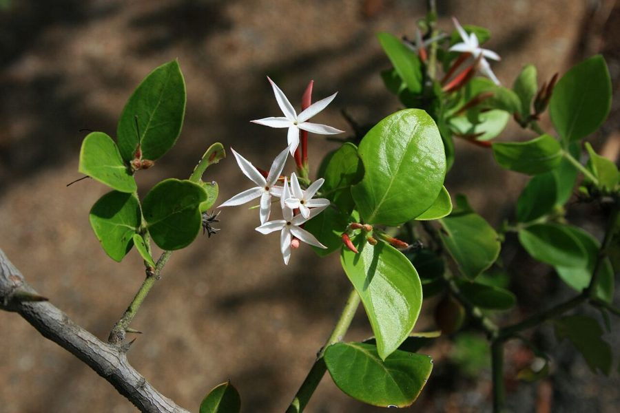

जंगली करौंदाConkerberry
Carissa spinarum · Apocynaceae · FLR-0265

- Scientific name वैज्ञानिक नाम
- Carissa spinarum L.
- Family कुल
- Apocynaceae
- Hindi हिंदी
- जंगली करौंदा
- Local names स्थानीय नाम
- jangli karaunda, jungli karonda, karaunda, conkerberry
- Status here यहाँ की स्थिति
- native
- Movement आवागमन
- Resident, here all year
- Known from कहाँ दर्ज
- Others have published records from the wider Awadh–Purvanchal plain, none yet from Basti–Ayodhya अवध–पूर्वांचल से दूसरों के प्रकाशित अभिलेख, बस्ती–अयोध्या से अभी नहीं
- IUCN IUCN
- not evaluated
- Review समीक्षा
- audited and independently read
When to look कब देखें
Present all year. साल भर मौजूद।
Uses and possibilities उपयोग और संभावनाएँ
Drawn from the documented uses in the profile below, where each is labelled traditional, current or a research lead. All uses →
Tell it apart from इनसे अलग पहचानें
जंगली करौंदा / Conkerberry
Carissa spinarum L. — Apocynaceae
जंगली करौंदा — एक कँटेदार जंगली झाड़ी जो सूखे इलाकों में आम है। करौंदे जैसी, पर छोटी और जंगली। सफेद, सुगंधित फूल और गहरे लाल-बैंगनी, खट्टे-मीठे फल। जंगली जानवर इसे खाते हैं। गाँव के किनारे, खेत की सीमा पर कभी-कभी यह झाड़ी दिख जाती है। कँटेदार और सघन, अच्छी बाड़ बनती है।
Quick Identification त्वरित पहचान
| Feature | Description |
|---|---|
| Size | Spinose shrub 1–3 m tall, stiff, much-branched |
| Leaves | Opposite, entire, lanceolate, 3–7 cm, glossy, leathery, dark green |
| Spines | Sharp, paired, present on stem angles; strong and deterrent |
| Flowers | White, fragrant, five-petaled, solitary or small clusters |
| Fruit | Drupe 1–1.5 cm, red ripening to dark purple-black; edible |
| The test | Rub a ripe fruit; sweetly fragrant; soft when ripe |
Field tip: A spiny shrub with glossy opposite leaves, fragrant white flowers, and dark purple edible berries found in open scrub and woodland margins. It resembles Karonda but is wilder and less commonly cultivated. The fragrance at dusk is distinctive.
हिंदी — कैसे पहचानें: कँटेदार झाड़ी, चमकदार पत्तियाँ, सफेद फूल, गहरे फल। करौंदे से जंगली और कम पालतू।
Morphology आकारिकी
Biometrics (wild shrubs, peninsular and Gangetic India):
| Measurement | Range |
|---|---|
| Height | 1–3 m |
| Stem diameter | 0.8–2.0 cm |
| Leaf length | 3–7 cm |
| Leaf width | 1.5–3.5 cm |
| Flower diameter | 0.8–1.2 cm |
| Fruit length | 1.0–1.5 cm |
Stem and branches: Armed with sharp, opposite spines; bark greyish. Branches stiff and interlacing, creating a dense, impenetrable shrub. The latex is not toxic.
Leaves: Opposite, decussate, entire, lanceolate-elliptic, glossy above, paler beneath. Leathery texture.
Flowers: Small, white, five-petaled, fragrant especially at dusk. Pollinated by night-flying insects and bees.
Fruit: A drupe, red when immature, dark purple to black when fully ripe, with a sweet, slightly astringent taste.
हिंदी: पत्तियाँ विपरीत, चमकदार, कड़ी। फूल सफेद, रात को खुशबू। फल काला, नरम, खट्टा-मीठा।
Behaviour & Ecology व्यवहार और पारिस्थितिकी
Conkerberry is a shrub of the dry deciduous forests and open woodlands of the Indian peninsula, extending into the Gangetic plains where it is less common. It tolerates poor, rocky soils and semi-arid conditions. The high spine density makes it an excellent barrier plant. The flowers are visited by insects seeking nectar; the ripe fruits are taken by birds and small mammals, which disperse the seeds. The plant is easily propagated from seed or cuttings.
Unlike its cultivated relative Karonda, which is more common in homestead gardens, conkerberry is primarily a wild species in eastern UP.
हिंदी: सूखे और पथरीली जमीन पर रहता है। बाड़ के लिए बहुत अच्छा। पक्षी और जानवर फल खाते हैं। कटिंग से आसानी से लग जाता है।
Life Cycle / Phenology जीवन चक्र
| Month / season | Event |
|---|---|
| January–February | Relative dormancy; some new growth |
| March–June | Flowering begins; peak flowering May–June |
| June–October | Fruit ripens from red to purple-black |
| September–February | Relative dormancy; leaves persist |
Seeds germinate readily after rains. Fruiting begins by the second or third year. Lifespan 30–40 years or more.
हिंदी: मार्च-जून में फूल, जून-सितंबर में फल। बीज बरसात में अंकुरित होते हैं।
Associated Species / Interactions संबंधित प्रजातियाँ
- Pollinators: Night-flying insects and bees visit the fragrant flowers.
- Fruit dispersal: Birds and small mammals feed on ripe fruit and disperse seeds.
- Hedge companions: Often occurs alongside Indian Jujube, thorn scrub, and other dry-zone shrubs.
Pests and Diseases कीट और रोग
- No major insect pests or diseases reported.
Agricultural / Human Relevance कृषि प्रासंगिकता
Food use: The ripe fruit is eaten fresh, though less commonly cultivated for this purpose than Karonda. The taste is sweet-tart and the fruit is taken by villagers when encountered in the wild. No commercial market in eastern UP.
Boundary and hedging: The shrub's high spine density and dense branching make it valuable as a living boundary, though less often planted for this purpose than Nirgundi or Karonda.
Traditional use: Little documented traditional use specific to conkerberry in eastern UP. The fruit is considered edible, and the plant is respected as a wild food source.
हिंदी: जंगली फल, खा सकते हैं, पर खेती नहीं करते। बाड़ के लिए अच्छा है।
Expected Locally स्थानीय रूप से अपेक्षित
Not a field record. Written from published accounts for eastern Uttar Pradesh. No confirmed local sighting yet — if you have seen it, that is what the atlas needs.
अभी तक स्थानीय पुष्टि नहीं। यह विवरण प्रकाशित स्रोतों से है, किसी अवलोकन से नहीं।
Expected in dry scrub, forest margins, and field boundaries throughout eastern UP, though less common than in the peninsula. Visible year-round. A first local record would be a photograph showing the spiny branches, opposite leaves, and fruit, with location and date.
Distribution वितरण
Global range: Native to tropical Asia, from South Asia through Southeast Asia to the Malay Peninsula.
In India: Throughout the peninsula and extending into the Gangetic plain; common in dry deciduous and dry thorn forests.
In Uttar Pradesh: Scattered in semi-arid and dry zones; less common in eastern regions.
In Basti district / eastern UP: Occasional in dry scrub and field margins; less common than Karonda.
Research Questions शोध प्रश्न
Anyone can investigate these | कोई भी इन प्रश्नों की जाँच कर सकता है
- How many wild conkerberry shrubs are present in a local forest margin or scrubland, and how productive are they? — Field survey and fruit collection.
- Does conkerberry fruit differ in taste or size compared to Karonda, and do people distinguish between them? — Taste test; household survey.
- What insects visit conkerberry flowers at dusk vs. during the day? — Observation and netting.
- Can conkerberry cuttings be successfully rooted and used as boundary plants? — Propagation trial.
- How long does it take from flower opening to mature fruit harvest? — Mark flowers; count days.
Similar Species मिलती-जुलती प्रजातियाँ
| Species | How to tell apart | हिंदी |
|---|---|---|
| Karonda (Carissa carandas) | Similar but more commonly cultivated; fruit often larger; more glossy appearance | पालतू करौंदा, अक्सर बगीचे में |
| Indian Jujube (Ziziphus mauritiana) | Spines unequal and curved; leaves alternate; larger fruit; different family | बेर, पत्तियाँ एकांतर |
| Maytenus species | Leaves finer; no strong spines; different fruit structure | अलग पत्तियाँ |
Field rule: A spiny shrub with small, glossy, opposite leaves; fragrant white flowers; and dark purple edible berries is conkerberry.
Taxonomy & Classification वर्गीकरण
Original description. Described by Carl Linnaeus in 1753 in Species Plantarum as Carissa spinarum. The specific epithet spinarum refers to the spiny nature of the plant.
Subspecies. Monotypic — no subspecies are currently recognised.
Family and order placement. Apocynaceae, the dogbane family, order Gentianales. The genus Carissa comprises about 30 species, mostly from Africa and Asia.
Phylogenetic notes. Carissa spinarum is one of the Old World species, distinguished from African species by its smaller stature and leaf characteristics.
IUCN status rationale. Not evaluated. Widespread in its native range.
Photo Gallery फोटो गैलरी
Photos needed आवश्यक फोटो
- [ ] Whole spiny shrub in leaf and flower (पूरी झाड़ी)
- [ ] Flowers showing fragrance structure (फूल)
- [ ] Ripe dark fruit on branch (पके फल)
- [ ] Detail of spines (कँटे)
No photos yet — add field photos to media/species/conkerberry/ and run node scripts/sync_photos.js.
References संदर्भ
- Linnaeus, C. (1753). Species Plantarum. Laurentii Salvii, Holmiae, vol. 1, p. 209. [original description]
- Hooker, J.D. (1876). The Flora of British India, vol. 3. L. Reeve, London.
- Duthie, J.F. (1903). Flora of the Upper Gangetic Plain and of the Adjacent Siwalik and Sub-Himalayan Tracts. Government Printing, Calcutta.
- Kirtikar, K.R. & Basu, B.D. (1935). Indian Medicinal Plants, 2nd ed., vol. 1. Lalit Mohan Basu, Allahabad.
- Pandey, P. & Singh, R. (2008). Ethnobotanical uses of Apocynaceae in central India. Journal of Economic and Taxonomic Botany 32(1): 118–125.
- GBIF Occurrence Data — Carissa spinarum, India (2020–2026).
Source file: species/flora/shrubs/conkerberry.md